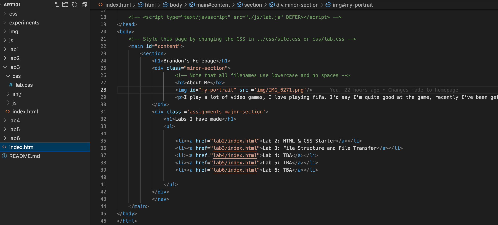
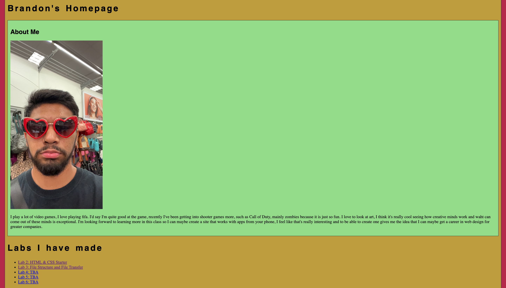
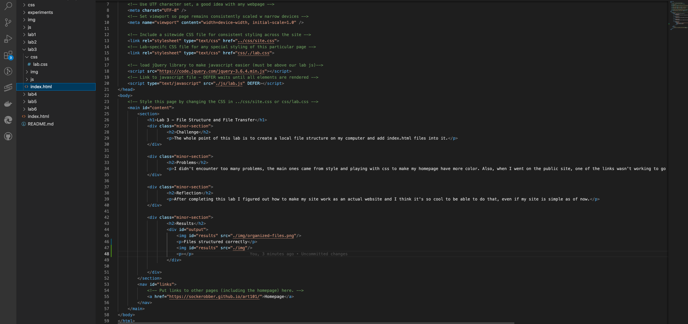

Lab 3 - File Structure and File Transfer
Challenge
The whole point of this lab is to create a local file structure on my computer and add index.html files into it.
Problems
I didn't encounter too many problems, the main ones came from style and playing with css to make my homepage have more color. Also, when I went on the public site, one of the links wasn't working to go back to the homepage but the links work to go to the labs which was confusing. I also had trouble adding in images, using the right folder call tripped me up but I eventually got it to work.
Reflection
After completing this lab I figured out how to make my site work as an actual website and I think it's so cool to be able to do that, even if my site is simple as of now.
Results
Files structured correctly
HTML of my homepage
Homepage in local file
HTML of Lab 3